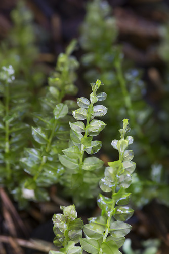

Mniaceae
Mnia Moss Family / Leafy Moss Family
Mniaceae is a family of generally robust acrocarpous mosses, typically forming tufts or sods in moist, shaded habitats like forest floors, stream banks, logs, and rocks. They are readily recognized by their relatively large, broad leaves (often ovate, elliptic, or obovate) which frequently possess a distinct border of narrow, elongated cells and may have toothed margins. When moist, the leaves often spread widely, giving the plants a leafy, flattened appearance.
Overview
The Mniaceae family belongs to the order Bryales and comprises around 8-10 genera and approximately 75 species. Well-known genera include Mnium, Plagiomnium, and Rhizomnium. These mosses are widespread, particularly common in temperate and boreal regions of the Northern Hemisphere, but also occur in the Southern Hemisphere and mountainous areas.
Their relatively large size and distinctive broad leaves make them conspicuous elements of the bryophyte flora in moist woodlands and other shaded environments. The presence of a differentiated leaf border and often toothed margins are key diagnostic features. The leaf cells are typically large, smooth, and somewhat hexagonal or rhomboidal. Sporophytes, when present, usually feature long setae bearing inclined to pendent capsules with a well-developed double peristome of the "Bryoid" type.
Ecologically, Mniaceae contribute to ground cover in forests, help stabilize soil, and retain moisture. Their relatively large size provides habitat for microinvertebrates. Some species show interesting reproductive biology, including specialized asexual propagules or distinct male plants.
Quick Facts
- Scientific Name: Mniaceae
- Common Name: Mnia Moss Family, Leafy Moss Family
- Number of Genera: Approximately 8-10
- Number of Species: Approximately 75
- Distribution: Widespread, especially Northern Hemisphere temperate and boreal regions.
- Evolutionary Group: Bryophytes - Mosses - Bryales
Key Characteristics (Moss Morphology)
Gametophyte: Growth Form and Habit
Plants are acrocarpous, typically medium-sized to large and robust, forming loose to dense tufts or sods. Stems are erect to ascending, sometimes with creeping sterile stems (stolons) present in some genera (e.g., Plagiomnium). Plants often appear leafy and somewhat flattened when moist due to the broad, spreading leaves.
Gametophyte: Stems
Stems usually possess a well-developed central strand. Rhizoids are often present, sometimes densely covering the lower stem.
Gametophyte: Leaves
Leaves are typically large, broad (ovate, elliptic, oblong, obovate, or lingulate), often narrowed or decurrent at the base. A key feature is the frequent presence of a distinct border of narrow, elongated, often thick-walled cells, contrasting with the larger inner laminal cells. Leaf margins are commonly toothed, especially in the upper half, with teeth that can be single or paired. The costa is single and strong, usually ending near the leaf apex or sometimes shortly excurrent. Laminal cells are large, parenchymatous-looking, typically smooth, thin-walled, and isodiametric hexagonal to shortly rhomboidal.
Sporophyte: Seta, Capsule, and Peristome
Sexual condition is variable (synoicous, dioicous, or autoicous). Male plants in dioicous species are sometimes dwarf. The seta is long and smooth. The capsule is typically exserted, inclined to pendent (rarely erect), usually symmetric, ovoid, oblong-cylindric, or subglobose, with a distinct neck. The operculum is usually conical to rostrate. The peristome is double and well-developed, of the characteristic Bryoid type, with 16 lanceolate, papillose exostome teeth and a well-developed endostome consisting of a high basal membrane, keeled segments, and often appendiculate cilia.
Field Identification (Mosses)
Identifying Mniaceae often relies on their relatively large size and distinctive leaf characteristics:
Primary Identification Features (Field/Hand Lens)
- Large, broad leaves: Leaves are noticeably larger and wider than many other common mosses.
- Leaf border: Look closely (requires good hand lens) for a distinct border of different-looking cells along the leaf margin.
- Toothed margins: Leaf edges, especially the upper parts, are often visibly toothed.
- Acrocarpous habit: Forming tufts or sods with sporophytes (if present) at the tips of stems.
- Habitat: Typically found in moist, shaded places on soil, humus, logs, or rocks.
- Flattened appearance when moist: Broad leaves spread out when wet.
Secondary Identification Features (Microscope often needed)
- Cell shape/size: Confirm large, isodiametric hexagonal or rhomboidal, smooth laminal cells.
- Border cell details: Examine the narrow, elongated cells of the border.
- Tooth structure: Single vs. paired teeth.
- Peristome structure: Confirmation of the Bryoid double peristome (if fertile capsules available).
- Stolon presence: Check for creeping sterile stems in some genera.
Common Confusion Points (Other Mosses)
- Bryaceae (e.g., Bryum): Also in Bryales with similar sporophytes. Leaves are often narrower, may lack a distinct border or have different cell shapes (often longer rhomboidal).
- Plagiotheciaceae (e.g., Plagiothecium): Pleurocarpous mosses that can have broad, somewhat similar-looking leaves, but grow in mats/wefts, lack distinct borders, and have lateral sporophytes.
- Rhizogoniaceae: Can have large leaves, sometimes bordered or toothed, but often have different growth habits (e.g., frondose) or leaf arrangements.
- Hookeriaceae: Some have large, broad leaves, sometimes bordered, but are pleurocarpous and often have very different cell structures or double costae.
Field Guide Quick Reference (Mosses)
Look For:
- Acrocarpous tufts/sods
- Large, broad leaves (ovate, elliptic etc.)
- Distinct leaf border (use lens)
- Toothed leaf margins (often)
- Moist, shaded habitats
- Strong single costa
Key Variations:
- Leaf shape (elliptic vs. obovate vs. lingulate)
- Presence/absence of stolons
- Tooth details (single vs. paired)
- Capsule orientation (inclined vs. pendent)
Notable Genera
Several well-known genera belong to the Mniaceae family:

Mnium
(Genus)
The type genus. Typically has erect fertile stems arising from indistinct creeping stems. Leaves often oblong-lingulate, strongly toothed with paired teeth. Common species like M. hornum form dense tufts on acidic soil in woodlands.

Plagiomnium
Leafy Moss (Genus)
Characterized by distinct creeping sterile stems (stolons) with smaller leaves, and erect fertile stems with larger leaves. Leaves often broadly elliptic or obovate, usually bordered and toothed with single teeth. Common in moist woods on soil, logs, rocks. Includes species like P. cuspidatum.

Rhizomnium
Round-leaved Moss (Genus)
Distinguished by broadly elliptic to nearly circular leaves that are typically entire (untoothed) but strongly bordered. Plants often have a reddish tinge. Found in very wet, shaded places like stream banks or seepage areas. R. punctatum is a common example.

Cinclidium
(Genus)
Less common genus found in calcareous fens and wet tundra. Leaves large, obovate or spatulate, strongly bordered, often reddish. Sporophytes distinctive with large, pendent capsules and a unique endostome structure (dome-like). C. stygium is a notable species.
Phylogeny and Classification
Mniaceae is a core family within the order Bryales, class Bryopsida. The Bryales are characterized by acrocarpous growth and typically well-developed double peristomes of the "Bryoid" type. Mniaceae is distinguished within this order primarily by its large, broad leaves, often with distinct borders and large, parenchymatous-like laminal cells.
Molecular studies confirm the placement of Mniaceae within Bryales and have helped clarify relationships among its genera (e.g., separating Plagiomnium and Rhizomnium from a broader concept of Mnium). The family likely represents an adaptation to stable, moist, shaded environments where large leaf surfaces for photosynthesis are advantageous. Related families within Bryales include Bryaceae, Leptostomataceae, and Phyllodrepaniaceae.
Position in Plant Phylogeny
- Kingdom: Plantae
- Division: Bryophyta (Mosses)
- Class: Bryopsida
- Order: Bryales
- Family: Mniaceae
Evolutionary Significance
The Mniaceae family is significant for:
- Leaf Morphology: Demonstrates the evolution of large, broad leaves with specialized borders within acrocarpous mosses, likely maximizing light capture in shaded habitats.
- Cellular Structure: Characterized by large, parenchymatous-like laminal cells, contrasting with the smaller or elongated cells of many other mosses.
- Bryoid Peristome: Exhibits the complex and well-developed double peristome typical of the Bryales order, crucial for regulated spore dispersal.
- Ecological Role: Important components of moist forest floor and streamside ecosystems in temperate and boreal zones.